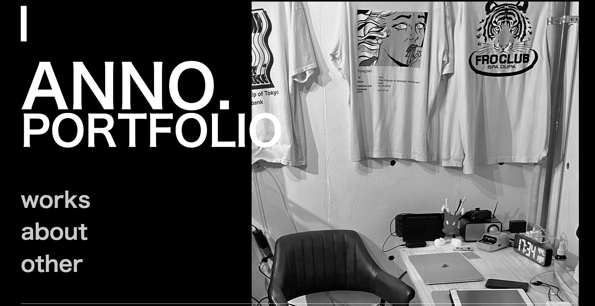
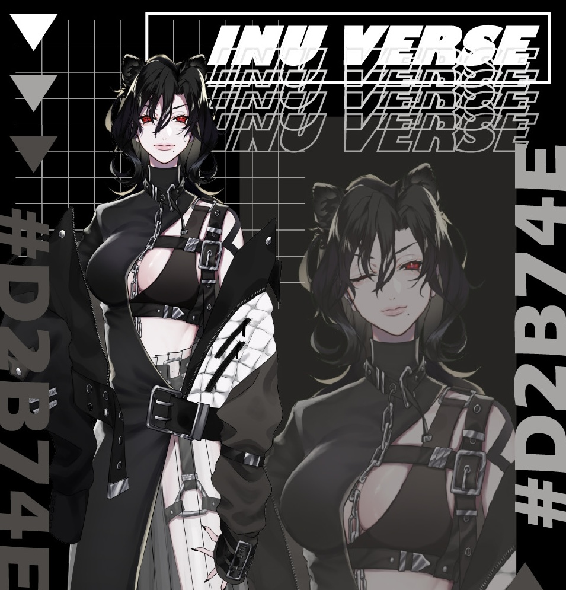
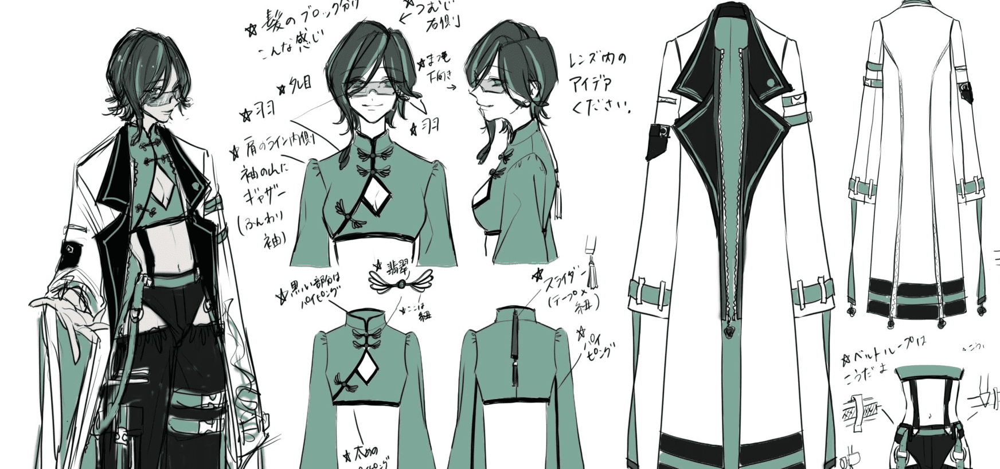

01 WORKS
FEATURES PROJECT
For more information on this production's images, they correspond with the text on the right.
Please refer to the number for further information.
01
02

04
03

05

DETAILS
- 自身のポートフォリオ
使用ツール : Fgima/HTML/CSS
制作期間 : 1週間 - 某地域病院 Webサイト制作
使用ツール : Wordpress/Photoshop
制作期間 : 1か月 - 株式会社NOX DESIGN Webマーケティング会社のサイト制作
使用ツール : /Studio/Figma/Photoshop
制作期間 : 2週間 - 某建築デザイン事務所 Webサイト移行及び改修
使用ツール : EditorX/Photoshop
制作期間 : 1週間 - 某調剤薬局 Webサイト制作
使用ツール : Wordpress/Photoshop
制作期間 : 1か月

02 ABOUT
PROFILE
Here is my background and brief work history.
Anno Minako
阿武 未奈子 1996.5.22生まれ
山口県下関市立南高等学校の理数クラス卒業
桑沢デザイン研究所に入学するため東京上京
グラフィック、空間、プロダクト、ファッションデザインを学び、卒業後はアパレル業界に就職。
アパレルでファッションデザイナーとして5年勤めた会社を退職し、Webデザイン会社にてWebデザインを学ぶ。
趣味はイラスト、ファッション、スポーツ全般。ポメラニアンとお酒が好き
mail : anchan8522@gmail.com
tel : 090-9473-2258
X : @An28626472
03 OTHERS
OTHERS PROJECT
These are work projects and hobby productions received outside of the company.
This also has details corresponding to the number.
01

02

04
03

05
DETAILS
- イラストレーション
趣味/依頼の制作物
写実からデフォルメまで、様々なテイストを描けることが強み - グラフィックデザイン
広告、名刺、ロゴ、またテキスタイルなど様々なデザインを制作
- ファッションデザイン
デザイン提案から生産まで経験し、現実的なデザインが得意 - Vtuberの立ち絵
Vtuberの立ち絵（レイヤー分け）の制作。Live2Dは勉強中 - キャラクターデザイン
オリジナルデザインや既存キャラクターのアレンジが可能